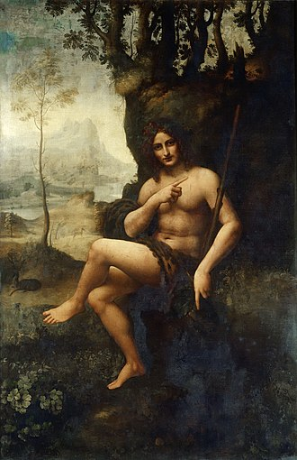

Leonardo da Vinci, sovint, ha estat descrit com l'arquetip i el símbol humà del Renaixement, un geni universal, un filòsof humanista amb una curiositat il·limitada, i una gran força creativa.[1] Ha estat considerat com un dels pintors més destacats de tots els temps i potser la persona més polifacètica i talentosa en un nombre més gran d'àmbits diferents.
Aquestes van ser algunes de les seves més grans obres